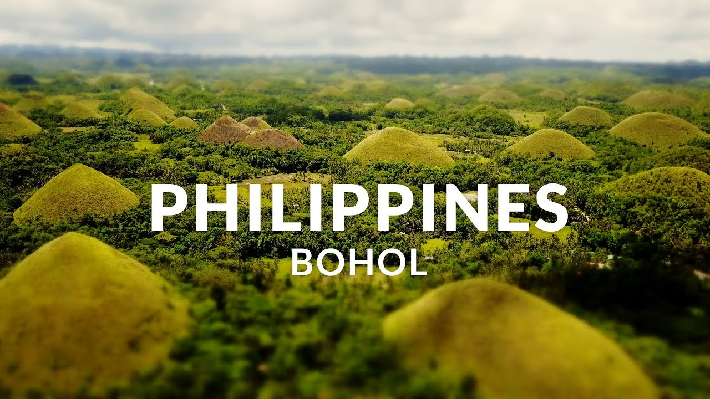

BOHOL

Bohol is in the central part of the Philippines. It is about 700 kilometers south of Manila and about 70 kilometers southeast of Cebu.
The island must have been developed from the magnetic tectonic mechanism which resulted from the under thrusting of the southwest Philippine plate east of Samar and Surigao.
The oldest known rock formation in the island, the Alicia schist, is inferred to be a part of the Bohol crystal rocks before plate interactions.
All succeeding igneous extrusive rocks to accumulate were marine and terrestrial deposits in the Bohol basin.
It is a first class province, composed of 47 municipalities and the city of Tagbilaran, which is the capital of the province.
There are 1,109 barangays populated by 1,136, 268 people (2000 count) spead over the three congressional districts of the province with an average household size of 5.4
Bohol’s primary assets are its people with the distinctive quality traits of hospitality, religiosity and strong family ties.
Bohol’s mainland and the surrounding 73 smaller islands make up a total land area of 411,726 hectares.
It is oval-shaped akin to its aromatic root crop, ‘ubi kinampay,’ which is one of the high value crops of the province.
It has a gently rolling terrain, where the hilly interior is home to rare and endangered flora and fauna.
The uplands are fit for agro-forestry and high value agricultural production, making it essentially an agricultural province.
Its main products are rice, coconut, corn livestock and cottage industries of furniture, basketry, shell craft and home decors.
Mineral resources such as limestone, manganese. silica and rock phosphate abound in the island.
FACTS ABOUT BOHOL
Kalamay is a popular pasalubong (the Filipino tradition of a homecoming gift).
They are often eaten alone, directly from the packaging. Kalamay is also used in a variety of traditional Filipino dishes as a sweetener, including the suman and the bukayo.
It can also be added to beverages like coffee, milk, or hot chocolate.
Chocolate Hills were declared a National geographical monument in 1988. UNESCO has also declared these hills as a World Heritage Site.
Despite many efforts by the government, these hills are considered as viable sites for many small-scale local quarries.
Tarsier is one of the smallest primates it is more active at night,The most noticeable thing about tarsiers are their eyes.
They have the largest eyes relative to body size of any mammal.
Each eyeball is around 16 millimeters in diameter, which is as large as the tarsier’s entire brain, but every last millimeter is necessary since the tarsier is a nocturnal species.
The eyes are so large, they can’t rotate them, so they have a neck that do the work instead.
Bohol is the Most Kid Friendly Place in the Philippines.
Sandugo was a blood compact, performed in the island of Bohol in the Philippines, between the Spanish explorer Miguel López de Legazpi and Datu Sikatunathe chieftain of Bohol on March 16, 1565, to seal their friendship as part of the tribal tradition.
This is considered as the first treaty of friendship between the Spaniards and Filipinos. "Sandugo" is a Visayan word which means "one blood".
BACK TO THE HOMEPAGE